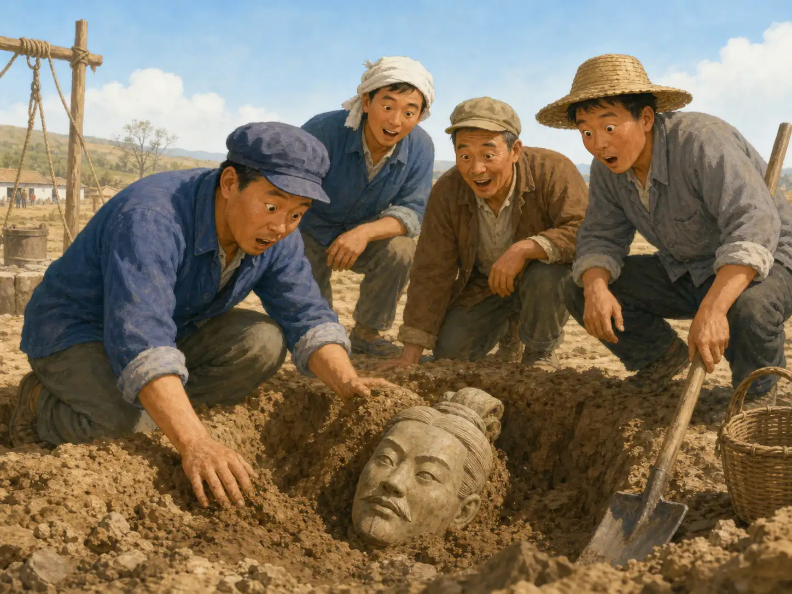
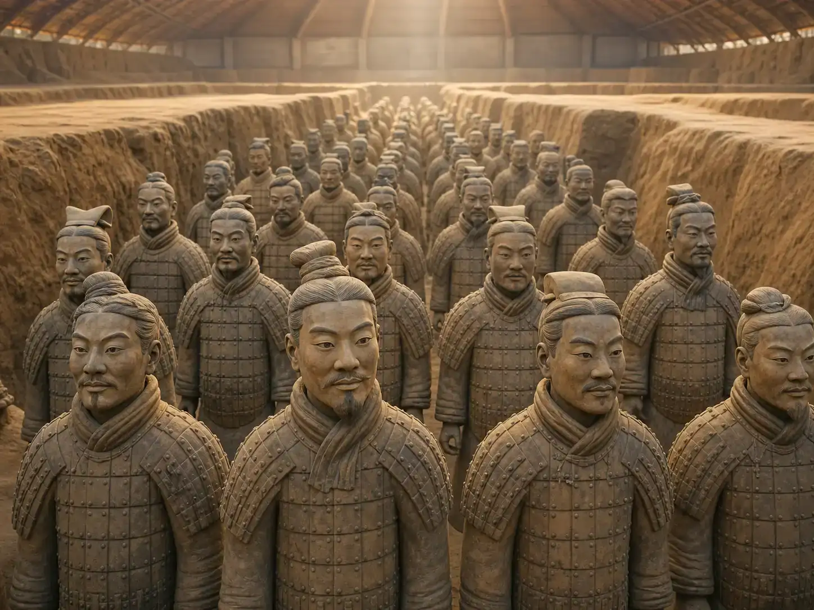
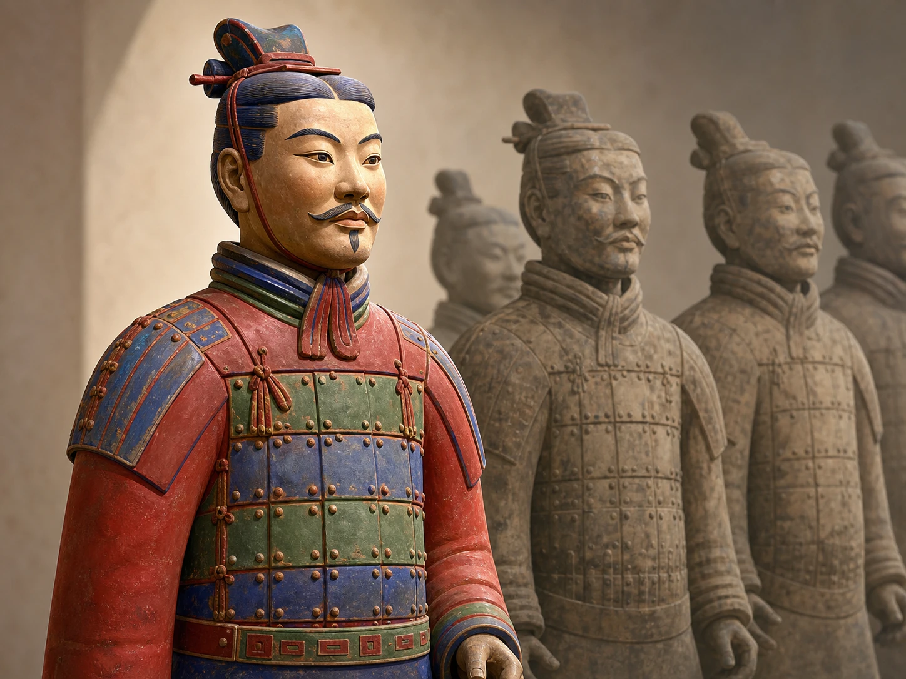

兵马俑：八千张脸，八千幅肖像吗？
Terracotta Warriors: Are 8,000 Faces 8,000 Portraits?
阅读难度 · 困难Reading level · Hard
Page 1
泥土里先出现的，不是一支完整军队
A Few Broken Pieces Led to an Army

Modern imagined scene: farmers find pieces of a clay figure while digging a well. No complete picture of that moment survives, and a whole soldier did not suddenly rise from the ground.
一九七四年三月，陕西临潼西杨村的农民为了打井，在土里挖到了一些陶片和雕塑残块。它们不是一尊突然站起来的完整士兵，更没有留下“泥人盯着农民”的可靠现场记录。当地文物工作者认出这些碎片可能很重要，随后，考古人员划出探方，一层一层记录土、木头留下的痕迹和器物的位置。一个偶然发现，就这样变成了一次正式的考古发掘。
考古不是把宝物赶快挖出来，而是问：“这块碎片原来在哪里？旁边有什么？它和别的东西是什么关系？”失去位置的箭头只是一件铜器；留在原位的箭头，却可能帮助人们判断一组士兵怎样排列。兵马俑的故事，因此不只从农民的工具开始，也从考古人员手里的尺、图纸和编号牌开始。
In March 1974, farmers digging a well in Xiyang Village, near Xi'an, found pieces of pottery and part of a clay figure. A complete soldier did not suddenly stand up, and there is no reliable record of a clay face staring at a frightened farmer. Local cultural workers realized that the pieces might be important. Archaeologists then marked out squares and carefully recorded each layer of soil, each trace of old wood, and each object's position. An accidental find had become a real archaeological excavation.
Archaeology is not a race to pull treasure from the ground. Archaeologists ask, “Where was this piece? What lay beside it? How does it connect to everything else?” An arrowhead with no location is only a bronze object. An arrowhead left in place may help explain how a group of soldiers was arranged. The story of the Terracotta Warriors begins with farmers' tools, but it also begins with measuring tapes, drawings, and numbered labels.
Page 2
八千张不同的脸，真的是八千幅真人肖像吗？
Are 8,000 Different Faces Really 8,000 Portraits?

Modern imagined scene: the warriors vary in face, hairstyle, and beard. Many real figures were found broken, so this complete formation is not an excavation photograph.
三个主要兵马俑坑里，考古人员估计还有数千件陶俑，常见的总数估计接近八千。走近已经修复的陶俑，你会看到圆脸、长脸、不同的眉眼、胡须和发式。于是，一个很诱人的说法出现了：每一张脸，都照着一名真实秦兵来做。
可是，“看起来不一样”不等于“都是肖像”。研究陶俑的制作痕迹后，学者发现工匠会分段制作身体和头部，再把部件组合起来。他们能重复使用若干基本做法，也会用手修改头发、胡须、眼角和表情。陶俑上的名字、印记和风格差异还让研究者追踪不同工匠与生产小组。答案比“一个模子复制八千次”更精彩，也比“八千名士兵逐个坐下来画像”更谨慎：这是标准化生产和手工变化一起完成的军队。
Archaeologists estimate that the three main warrior pits contain several thousand clay figures, with the total often placed near 8,000. Look closely at the restored warriors and you will see round faces, long faces, different eyes, beards, and hairstyles. That has led to a tempting idea: perhaps every face was copied from a real Qin soldier.
But “different” does not automatically mean “portrait.” Marks left during production show that craftspeople made heads and bodies in parts and then joined them. They could repeat basic forms while changing hair, mustaches, eyes, and expressions by hand. Names, marks, and small style differences also help researchers follow the work of different makers and production groups. The answer is more interesting than “one mold copied 8,000 times,” but more careful than “8,000 soldiers sat for their portraits.” This army joined standardized production with skilled hand-finishing.
Page 3
三个坑像一支军队，但标签不是秦人留下的
Three Pits Look Like an Army, but the Labels Are Modern
兵马俑并不在秦始皇主墓室里面。它们站在陵园东边的大型陪葬坑中，是一个更大陵墓体系的一部分。考古人员根据陶俑、战车、马和武器的位置，把一号坑理解为以步兵和战车为主的大型队伍；二号坑里有弓弩手、战车和骑兵等混合编组；较小的三号坑常被解释为指挥部。
这些解释有证据，却不是秦人插在坑边的说明牌。木质战车和武器的木柄大多已经朽坏，有些区域仍未发掘，陶俑也曾倒塌、破碎或被扰动。考古人员只能把留下的线索拼在一起，所以“军阵”和“指挥部”是目前很有根据的解释，不是每个细节都已经确定的战场照片。
The Terracotta Warriors do not stand inside Qin Shihuang's main burial chamber. They occupy large burial pits east of the mound and belong to a much bigger mausoleum complex. From the positions of figures, chariots, horses, and weapons, archaeologists interpret Pit 1 as a large force built mainly around infantry and chariots. Pit 2 mixes archers, chariots, cavalry, and other groups. Smaller Pit 3 is often interpreted as a command center.
Those ideas are based on evidence, but no Qin label was planted beside a pit to explain it. Wooden chariots and weapon handles have mostly decayed. Some areas remain unexcavated, and many figures fell, broke, or were disturbed. Archaeologists must fit the surviving clues together. “Battle formation” and “command center” are strong interpretations, not photographs in which every detail is certain.
Page 4
灰色不是原来的颜色，出土也不是故事的终点
Gray Was Not the Original Color - and Excavation Is Not the End

Modern imagined color reconstruction, not a perfectly preserved excavated figure. The warriors had lacquer and colored pigments, but each figure's exact colors must be studied from surviving traces.
今天的陶俑大多呈灰褐色，可许多俑原来涂过漆和彩色颜料。红、绿、蓝、紫、黑、白等颜色，让衣服、铠甲和面孔更醒目。问题是，埋藏两千多年后，脆弱的漆层一离开潮湿土壤，水分和环境突然改变，就可能卷曲、起翘，把上面的颜料一起带走。颜色不是像烟一样“氧化消失”，而是常常随着底层开裂、脱落。
这也改变了考古工作的速度。工作人员可能先加固颜色，再继续取土；破碎的陶片要编号、清理、寻找接缝，像拼一幅立体拼图。有些俑可以修复站立，有些只保留到证据允许的程度。没有准备好保护方法时，暂不发掘也可能是最负责任的选择，因为一件文物只能第一次离开土壤一次。
Most warriors look gray-brown today, but many were once covered with lacquer and colorful paint. Reds, greens, blues, purples, black, and white made faces, clothing, and armor stand out. After more than two thousand years underground, however, the fragile lacquer can react badly when the damp soil and steady conditions suddenly change. It may curl and lift, carrying the paint above it away. The color does not simply “oxidize into smoke.” It is often lost when the layer underneath cracks and flakes off.
That danger changes the speed of archaeology. Conservators may strengthen the color before removing more soil. Broken pieces must be numbered, cleaned, and matched like a giant 3-D puzzle. Some figures can be rebuilt to stand; others are restored only as far as the evidence allows. If a safe method is not ready, leaving something buried can be the most responsible choice. An ancient object gets only one first trip out of the ground.
Page 5
铜剑上的铬，并不是两千年前的“神奇镀层”
Chromium on the Weapons Was Not an Ancient “Magic Coating”
陶俑旁边出土了大量青铜箭头、剑和其他武器零件。过去，有人发现部分武器表面有铬，就说秦朝工匠发明了防锈的“镀铬技术”。二〇一九年的大规模检测却发现，铬只出现在一小部分样品上，也和武器保存得好不好没有关系。研究团队认为，这些铬更可能来自附近含铬的漆，在地下埋藏期间沾到了金属表面；青铜成分和细密、偏碱性的土壤，更能解释许多武器为何保存较好。
纠正这个传说，并不会让秦代工艺变得普通。大量大小相近的箭头、能够追踪生产小组的刻字，以及陶俑复杂的分工，本身就显示出惊人的组织能力。真正有趣的科学故事，不是替古人加上一项他们没有的发明，而是不断检测一个漂亮说法，发现证据不合时愿意改答案。
Thousands of bronze arrowheads, swords, and other weapon parts were found beside the figures. After chromium was detected on some weapon surfaces, a popular story claimed that Qin craftspeople had invented a special chrome coating to stop rust. A large study published in 2019 found a different answer. Chromium appeared on only a small share of the objects, and it did not match how well a weapon survived. The researchers concluded that it most likely came from nearby chromium-rich lacquer after burial. The bronze itself and the fine, slightly alkaline soil better explain why many weapons stayed in good condition.
Correcting that story does not make Qin craft ordinary. Groups of nearly matching arrowheads, inscriptions that help trace production teams, and the complicated work behind the figures still show extraordinary organization. The best science story is not one that gives ancient people an invention they did not have. It is one in which researchers test an exciting claim - and change the answer when the evidence does not fit.
Page 6
奇观背后，还有制造它的人和没有打开的门
Behind the Wonder Are Workers - and a Door Still Closed
如此巨大的陵园，需要陶工、金属工、木工、搬运者和许多其他劳动者。古代史书说曾征发七十万人修陵，这个精确数字无法独立核实；不过，陵园附近的工匠墓地和刑徒墓，以及人骨研究，确实说明参与者中既有技术熟练的工匠，也有囚徒和被迫承担重役的人。欣赏兵马俑时，不能只赞叹皇帝调动资源的能力，也要看见普通人付出的技术、时间，甚至生命。
秦始皇主墓室至今没有经过考古发掘。司马迁在秦始皇死后一百多年写成的《史记》说，墓中以水银模拟江河大海，还设置了弩机；后来的土壤检测曾发现汞异常，为“墓中使用过水银”提供了一条线索，却不能证明水银河怎样流动，更不能证实所有机关。主墓、未发掘区域和仍在修复的陶俑提醒我们：不知道，不等于可以用想象填满空白。
A mausoleum this large required potters, metalworkers, carpenters, haulers, and many other laborers. An ancient history says that 700,000 people were called up to build it, but that exact number cannot be checked independently. Cemeteries for workers and prisoners near the complex, along with studies of human remains, do show that the workforce included skilled craftspeople as well as prisoners and people forced into exhausting labor. When we admire the emperor's power to gather resources, we should also see the knowledge, time, and even lives given by ordinary people.
Qin Shihuang's main burial chamber has never been archaeologically excavated. More than a century after the emperor died, the historian Sima Qian wrote that mercury flowed in models of rivers and seas inside the tomb and that crossbows were set as traps. Later soil tests found unusual mercury levels, a clue that mercury may have been used there. They do not prove how “mercury rivers” worked, and they do not confirm every reported machine. The sealed chamber, unexcavated ground, and figures still being restored teach the same lesson: when we do not know, imagination cannot fill the space and turn itself into fact.
回到那八千张脸
Back to Those 8,000 Faces
那么，八千张不同的脸，真的是八千幅真人肖像吗？现有证据不能这样证明。我们能看见的，是许多工匠用可以重复的部件、熟练的双手和有组织的生产，做出了既属于同一支队伍、又各有变化的陶俑。
兵马俑真正留下的不是一个简单的“世界奇观”答案，而是一串还在继续的问题：谁制造了它们？怎样制造？颜色如何保存？地下还有什么？考古最勇敢的时刻，有时不是继续挖，而是在证据到这里时，诚实地停下来。
So, are 8,000 different faces really 8,000 portraits of real soldiers? The evidence cannot prove that. What it does show is a large group of craftspeople using repeatable parts, skilled hands, and organized production to create figures that belong together but still vary from one to another.
The Terracotta Warriors do not leave us with one easy “wonder of the world” answer. They leave a trail of questions: Who made them? How did they work? How can their color be saved? What remains underground? Sometimes the bravest act in archaeology is not to keep digging. It is to stop honestly where the evidence stops.